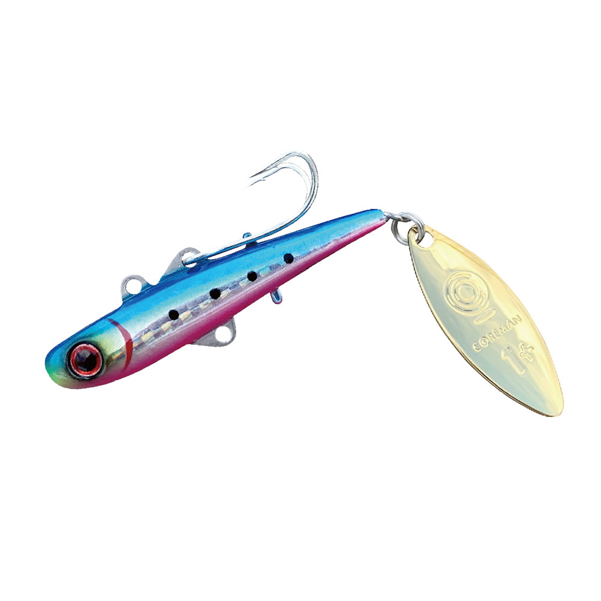
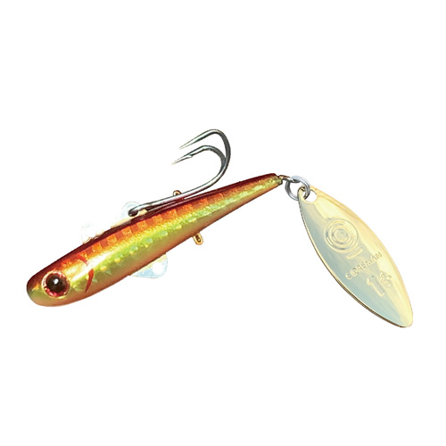
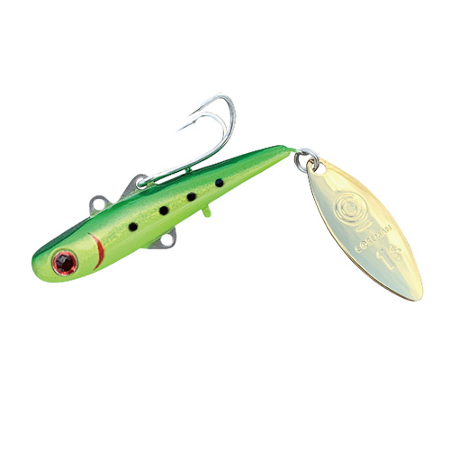
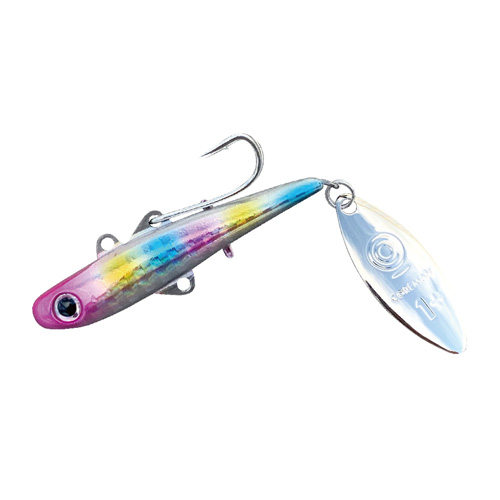

バックチャター BC-26
（BC-26 BACKCHATTER）
バックチャター BC-26（BC-26 BACKCHATTER）はCOREMAN（コアマン）のチャター系メタルルアーです。
「こんなルアー見たことない！破壊力抜群の新兵器」。ハーフスピンブレードの回転で千鳥足のような不規則なチャターアクションを生み出すコアマンのメタルルアーです。ただ巻きするだけで予測しにくい動きが出て、激戦のシャローでもシーバスを反射的にバイトさせられるのが最大の魅力です。

画像出典:コアマン公式HP
スペック
- メーカー
- COREMAN（コアマン）
- タイプ
- チャター系メタルルアー
- 全長
- 88mm
- 自重
- 26g
- フック
- がまかつ×コアマン CD21 #4（ダブルフック）
- ブレード
- コアマン ブレード #1
- リング
- コアマン オリジナル #2
- カラー
- 全10色
- ターゲット
- シーバス
- 価格
- 1,650円（税込）
▼今すぐチェック

バックチャター BC-26の特徴
ただ巻くだけで、ほかにない不規則なアクションが出るシャロー攻略の新兵器
-
ハーフスピンブレードの千鳥足アクション
独創的なボディデザインとシステムから生まれるチャターアクションが最大の特徴。ほかにはない不規則な動きで、シーバスを強烈に誘い出して反射的にバイトさせる。
-
ミディアム〜ミディアムスローのただ巻きでOK
公式いわく「最高のテクニックはミディアム〜ミディアムスローのただ巻き」。ルアーを信じてストレートに巻くだけで、誰でもこのアクションを出せる。
-
ダブルフックを上下に2本付けられる
フックはがまかつ特注のコアマンオリジナルダブルフック CD21 #4。ボディ下部のアイを使って、ダブルフックをもう1つ下向きに装着でき、上下2本にするとフッキング性能が上がる。
バックチャター BC-26の使い方
基本はミディアム〜ミディアムスローのただ巻き。キャストしたら、ルアーを信じてストレートに巻いてくるだけでチャターアクションが出る。
飛距離と浮き上がりの速さを両立しているので、浅いシャローを広く速く探れる。フィールドの状況に応じて、ダブルフックを上だけにするか、上下2本にするかを使い分けましょう。
バックチャター BC-26の得意な状況
河口や干潟など、水深の浅いシャローでシーバスを狙う状況が最大の出番。
人気ポイントでほかのルアーを見慣れたシーバスに、見たことのない動きで口を使わせたい場面で選びたい1本です。
ワンポイント
根掛かりが多い場所では、下向きのダブルフックを外して上だけにすると引っ掛かりを減らせます。逆に、バイトがあるのに乗らない時は上下2本にしてフッキング率を上げましょう。
浅い場所でゆっくり引きたい時は軽いBC-16やBC-10、遠投が必要な時はBC-26と使い分けるのがオススメです。
バックチャターシリーズの使い分け
| モデル | 特徴 | 得意な場面 |
|---|---|---|
| BC-10 | 軽量モデル | 小規模な場所・ごく浅いシャロー |
| BC-16 | 中間サイズ | 干潟・河口のシャローを丁寧に |
| BC-26 | 88mm／26g | 遠投で広いシャローを速く探る（本記事のモデル） |
バックチャターはBC-10・BC-16・BC-26の3サイズ展開。BC-26はシリーズで最も重く、飛距離を活かして広く探れるモデルだ。
オススメカラー
BC-26 バックチャターは全10色展開。シャローのシーバス狙いでオススメのカラーを厳選して紹介します。

#001 マコイワシイワシを模したナチュラル系。まず1色ならここから。

#003 アカキン濁りやローライトに強い定番のアカキン。

#006 グリーンチャートイワシグリーンとチャートのアピールを加えたイワシカラー。

#007 コットンキャンディピンク系のアピールカラー。澄み潮やデイゲームのローテーションに。
画像出典:コアマン公式HP
バックチャター BC-26に似ているルアー
-
 パワーブレード PB-20
コアマン
詳細はこちら＞
パワーブレード PB-20
コアマン
詳細はこちら＞
ブレードのフラッシングで誘うブレードベイト。ボトム付近まで探りたい時に。
-
 アイアンプレートSC IP-26
コアマン
詳細はこちら＞
アイアンプレートSC IP-26
コアマン
詳細はこちら＞
同じコアマンの鉄板バイブ。より深いレンジを遠投で探りたい時に。
-
 VJ-16
コアマン
詳細はこちら＞
VJ-16
コアマン
詳細はこちら＞
シャローのデイゲームで定番のバイブレーションジグヘッド。よりナチュラルに見せたい時の持ち替え先に。